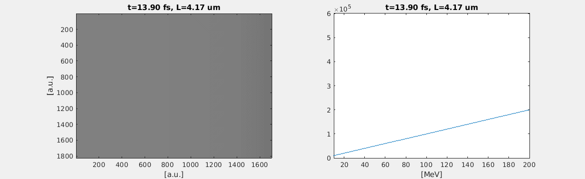

Pulse shaping animation
The experiment parameters are,
$$
E=800\ mJ,\ \tau=30\ fs,\ w_0=10\ \mu m, n_e=1.4 \times 10^{18}\ cm^{-3}
$$
If we input a 30-fs pulse, it will be re-shaped to a 10-fs pulse at the exit.

which can be compared with a 10-fs input pulse,